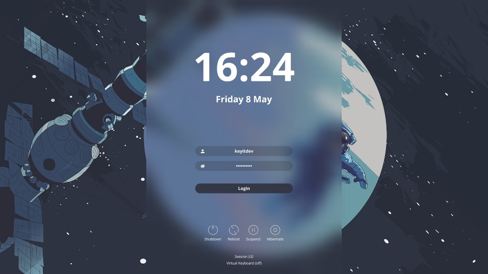

Loading mission file…
Waiting to pair devices…
Begin starts the mic (no greeting). ATLAS stays quiet until you say the wake word, or until ACT NOW / EMERGENCY.

Astro Health Hub
A simulated ship-side watch that tracks vitals, talks with the crew, and prepares what Earth needs to see.
Prototype for a hackathon demo. Not medical advice. Data is simulated.
Tap any reading to see how to measure it, why it matters and what to do. All data is simulated in your browser. Thresholds are our team's design values, not NASA figures. Prototype for a hackathon demo. Not medical advice.